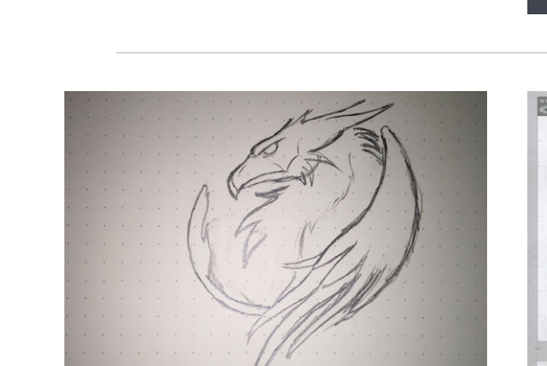
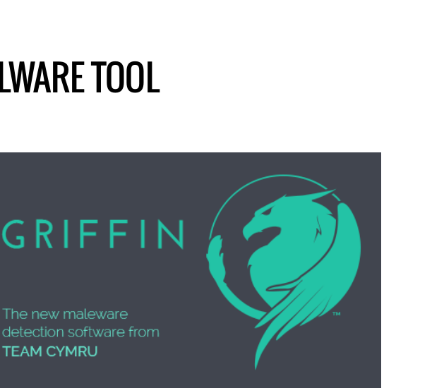
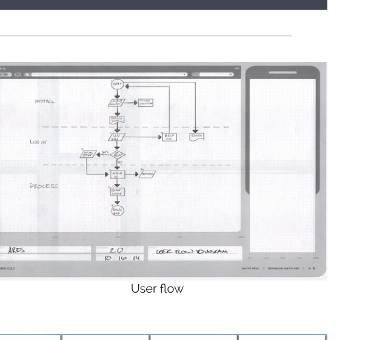
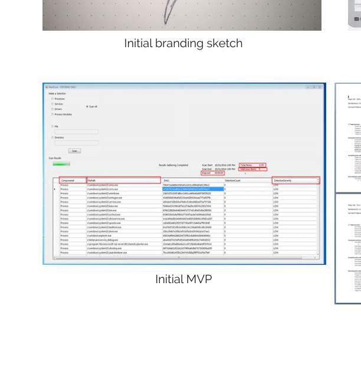
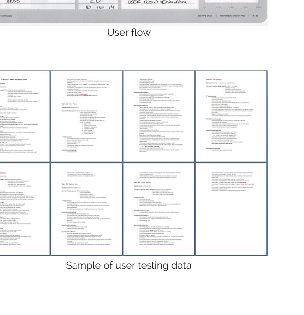
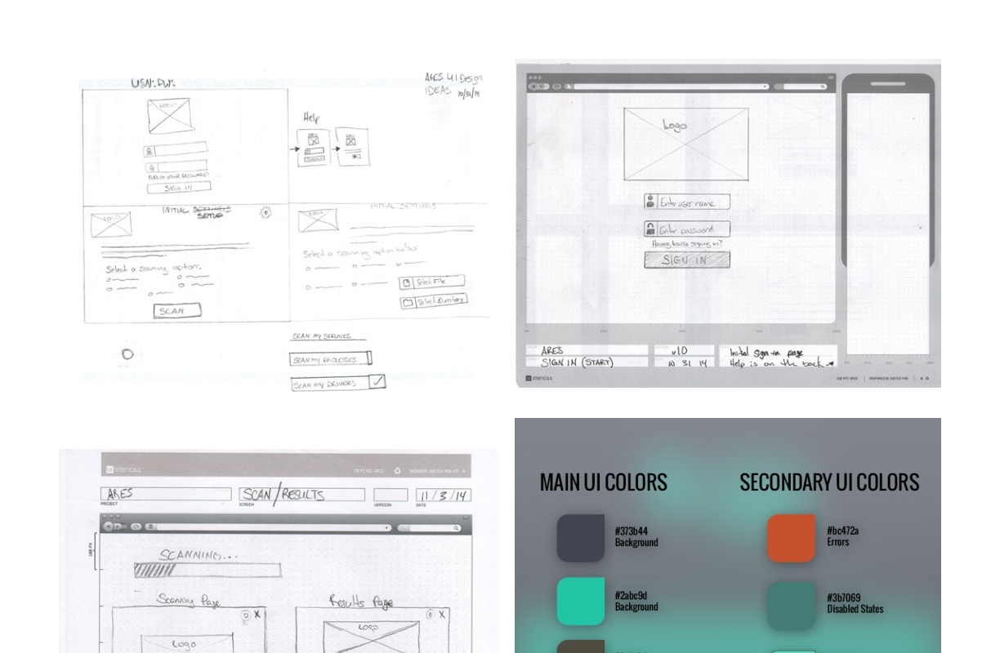
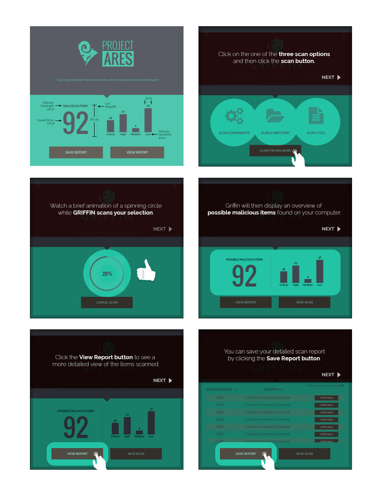

6
Case study
Griffin Malware Tool
Team Cymru's threat intelligence work lives deep in the network layer — not something most people ever see. Griffin was different. It was a free consumer tool that would scan a device for malicious software and surface the results in plain language. I designed it end to end, from the name and identity through the user flow, the MVP, user testing, and the final onboarding experience.
tl;dr
- Griffin needed to make a technically complex scan result legible to users with no security background.
- The branding came first — the tool needed an identity before it had an interface, and the griffin motif worked because it was a guardian, not a warning sign.
- Mapping the user flow before any wireframes revealed that the report state, not the scan itself, was where users would need the most support.
- Early MVP testing confirmed the scan flow felt manageable. The results screen was where people slowed down and needed more clarity.
- The final six-step onboarding experience was built around one principle: lead with what matters, then let users go deeper on their own terms.
The Process
The Design Had to Start with the Name
Before any screen existed, the tool needed a name and an identity. Team Cymru was known in intelligence and security circles, but Griffin was going to be publicly available — anyone could download it. The brand had to feel trustworthy, competent, and accessible to users who had no existing relationship with Team Cymru at all.
The griffin as a symbol made immediate sense: part eagle, part lion, traditionally a guardian. Strong without being aggressive. The hand-sketched concepts explored different treatments of the motif before settling on a clean, modern version of the form — something that would hold up at small sizes and work equally well on light and dark backgrounds.



Map the Flow Before Designing the Screen
Security tools tend to get designed from the inside out — start with what the system does, then figure out how to show it. That produces interfaces that make sense to engineers and confuse everyone else.
The user flow work went the other way: start with what the user needs to understand at each step, then figure out what the system needs to surface to make that possible. Every state — scan selection, scan in progress, results overview, report detail, and report save — was mapped as a sequence of user decisions rather than system events.
That mapping surfaced something important early: the report state was where users would have the most questions. A scan result is either clean or it isn't — but a threat count without context is just a number. The interface needed to communicate what that number meant before presenting what it contained.
Build the MVP. Then Put It in Front of People.
The initial MVP was functional, not polished. The core mechanics were there: select a scan scope, run the scan, see the results, access the report. The goal was not to ship this version — it was to learn from it.
User testing confirmed what the flow work had suggested: the scan itself felt manageable. Users moved through it without much hesitation. The results screen was where they slowed down. The threat score — a big number like 92 — was the first thing they looked at and the first thing they wanted explained. What did 92 mean? Out of what? What should they actually do about it?



The Color System Carried the Tone
The final visual direction used a dark background with a teal primary. Security tools often lean red, which puts users into a threat state before they've seen any results. The Griffin palette was designed to feel analytical rather than reactive — authoritative without triggering alarm.
The wireframe phase worked through information hierarchy before committing to visual treatment. What had to be visible at a glance? What could live behind a tap? The Project Ares brand mark anchored the screens without competing with the interface chrome.
Six Screens That Guided Without Lecturing
The final onboarding experience walked users through the tool in six steps. Not six explanation screens — six functional states, each one advancing the scan while giving users just enough context to know what was happening and what to do next.
Scan options were presented as three clear choices rather than a configuration panel. The scan animation gave feedback without generating anxiety. The results screen led with the threat score in large type, followed by supporting detail that let users understand what it meant. The report view organized findings by category. The save button was prominent enough to find without looking for it.

Outcome
Griffin shipped as a free tool, available to anyone. A user who had never heard of Team Cymru and didn't know what malware was could download it, run a scan, and understand what the report was telling them — without needing help.
That was the real measure. Most security tools are designed by people who already know what they're looking for. Griffin was designed for people who didn't. The process — identity first, flow second, build third, test fourth — is what made that outcome achievable rather than accidental.
Design decisions that held
- Brand identity built before any UI — the tool had a clear personality before it had a screen.
- User flow mapped before wireframes — information hierarchy solved before visual treatment began.
- MVP used for learning, not for shipping — what testing revealed shaped the final design directly.
- Six screens kept the experience tight enough that users never felt lost.
Continue Exploring
Contact
Want to talk through the Griffin design?
The branding process, the user-flow decisions, or what the testing revealed and how it shaped the final design — happy to get into any of it.
A good conversation is usually a better start than a formal intake form.